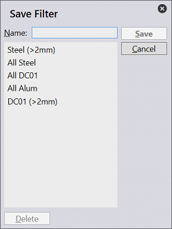
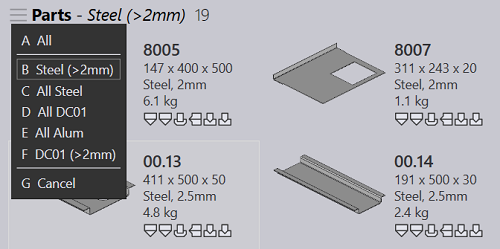
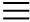

Use menu command Save Filter… or shortcut Ctrl+S to Save the filter by name. The Save Filter dialog can also be used to delete pre-existing filters. Selecting from an existing item, overwrites the item with the new filter.

 Click on the filter selection menu button () from the right-hand- side or use V shortcut key to list and select a saved filter. Select All option to clear filters and list all items. You can also use the alpha-numeric hot key A-Z, to jump-select a filter from the list.
Same sort/filter feature is also available in the jobs page.